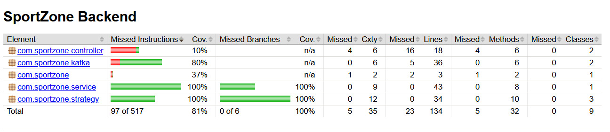

Plataforma de E-commerce Esportivo de Alta Performance.
Arquitetura, Design e Engenharia de Qualidade.
A identidade visual da SportZone foi concebida para transmitir energia, foco e profissionalismo. O sistema adota uma paleta Dark Mode complementada por um Laranja Vibrante, atraindo a atenção do usuário para as Call To Actions principais.
Toda a interface foi construída baseada na reutilização de componentes puros (HTML semântico e CSS). Os botões do e-commerce compartilham a mesma base visual, utilizando classes utilitárias. Os cards de produtos do Grid são renderizados dinamicamente a partir de um único template reutilizável, garantindo coesão visual máxima em todas as telas.
Para garantir uma excelente usabilidade (UX), o sistema atualiza o status do pedido em tempo real através de WebSockets. Micro-animações e mudanças de cor informam ao cliente o momento exato em que o pagamento é aprovado e o produto é despachado, sem recarregar a página.
O projeto segue uma arquitetura baseada em divisão de responsabilidades, separando rigidamente o cliente (Frontend) da lógica de negócios (Backend). A justificativa dessa escolha reside na escalabilidade: podemos evoluir o app Web sem impactar os serviços de pagamento.
Desenvolvido em Java 21 com Spring Boot 3. A estrutura do código é fortemente baseada no padrão MVC interno (Controller, Service, Repository), isolando a lógica de Domínio e garantindo que o acoplamento seja mantido no mínimo.
A interface foi construída visando performance máxima. Ao invés de pesados frameworks de SPA para uma loja simples, foi utilizado Vite com Vanilla JS. O DOM é manipulado apenas quando necessário, garantindo que a renderização de centenas de produtos seja perfeitamente fluida.
Para o processamento de pagamentos, a escolha arquitetural foi o padrão comportamental Strategy. Ele nos permite introduzir novos métodos de pagamento (como Boleto ou Criptomoedas) sem modificar o serviço principal de pedidos, obedecendo ao princípio Open/Closed (OCP) do SOLID.
@Component
public class PagamentoStrategyFactory {
private final Map<MetodoPagamento, PagamentoStrategy> strategies;
@Autowired
public PagamentoStrategyFactory(List<PagamentoStrategy> strategyList) {
strategies = new EnumMap<>(MetodoPagamento.class);
for (PagamentoStrategy strategy : strategyList) {
strategies.put(strategy.getMetodo(), strategy);
}
}
public PagamentoStrategy getStrategy(MetodoPagamento metodo) {
return strategies.get(metodo);
}
}A injeção dinâmica no construtor faz com que qualquer nova classe que implemente PagamentoStrategy seja automaticamente registrada pelo Spring, eliminando longos blocos de if-else ou switch-case.
O fluxo de compra tradicional costuma ser bloqueante. Na SportZone, decidimos por uma abordagem Event-Driven (Orientada a Eventos).
Quando o cliente finaliza o checkout, o PedidoService apenas salva o estado inicial no banco e emite o evento PedidoCriadoEvent para o tópico do Kafka. O retorno para o frontend é imediato (non-blocking).
Em background, o Worker intercepta o evento, delega para o Factory processar o pagamento via Strategy, simula a separação de estoque de forma isolada, e envia as notificações de sucesso via WebSocket para a interface gráfica.
Esta escolha garante resiliência. Se o serviço de pagamentos ficar lento ou fora do ar, o sistema não perde o pedido. A mensagem continua na fila do Kafka aguardando o sistema se recuperar.
O plano de testes foi meticulosamente desenhado para focar estritamente nas regras de negócio. Ignoramos propositalmente DTOs, Entidades anêmicas e Getters/Setters auto-gerados (Lombok), focando nossos esforços nos algoritmos core.
As Factories e as Strategies foram validadas em completo isolamento, garantindo 100% de cobertura nos algoritmos de cálculo e seleção dinâmica.
Utilizamos @EmbeddedKafka para instanciar um broker em memória durante o build. O teste end-to-end comprova o envio pelo Producer e o consumo perfeito pelo Worker.
